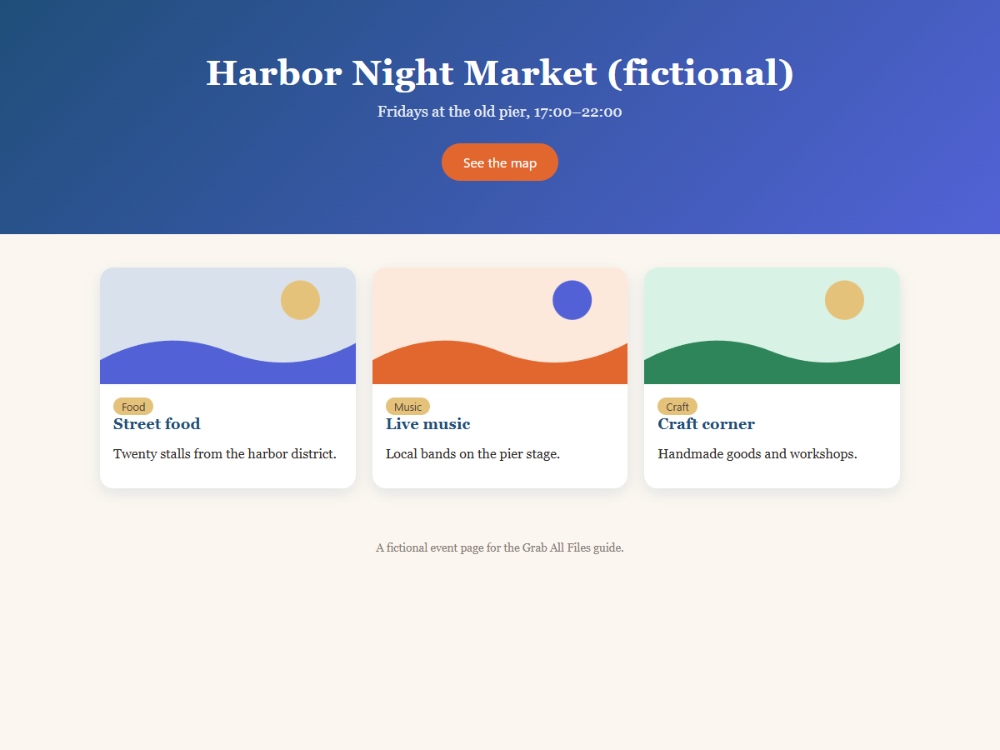

Real output from Grab All Files
A page saved as HTML with its original design (Free)
A fictional event page with colours and a card layout, saved as one HTML file that keeps the original look. The images are stored inside the file, so it displays offline. How closely a page is reproduced depends on how the page is built.
Output files
Side by side at the same window width

How it was made
- Source page
- /samples/source/en/night-market/
- Extension
- Grab All Files 5.8.20
- Browser
- Chrome 155.0.8059.85 (Windows 11)
- Plan
- Free
- Made on
- 2026-10-20
- Settings
- Pages: the open page
- Look: as the original page
- Images: stored in the file (shows offline)